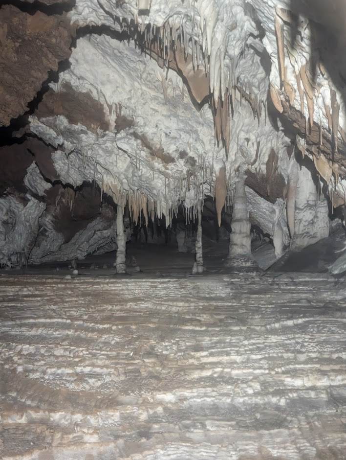
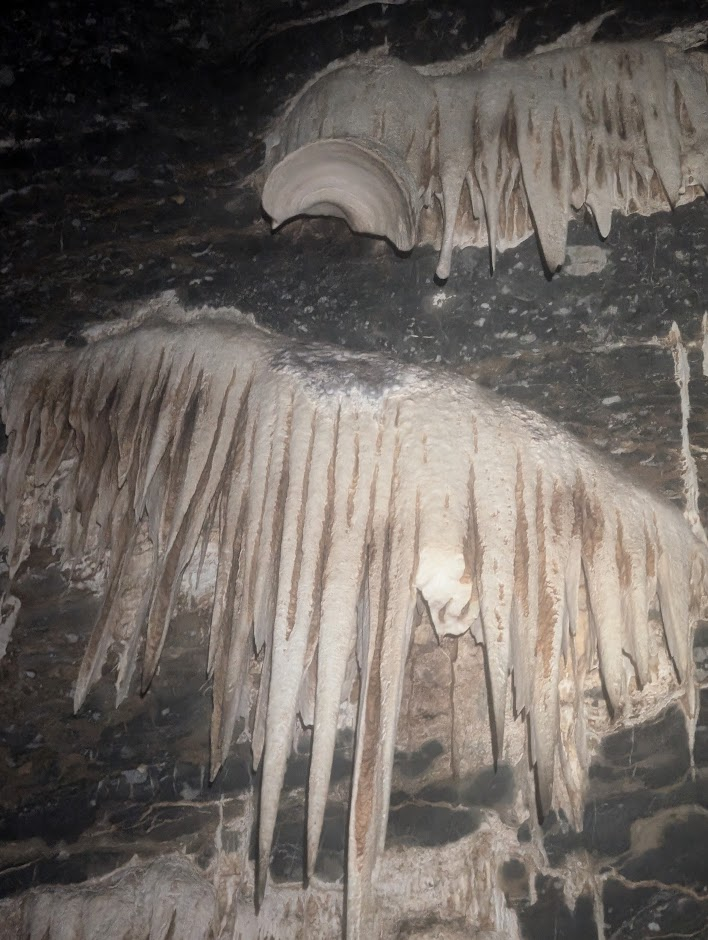
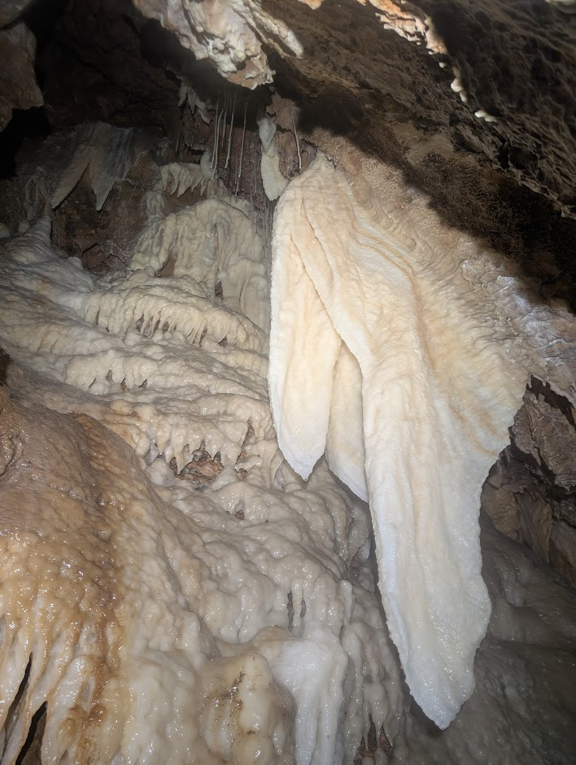

Day 1 · Canberra – Jenolan
After getting together at Olaf’s place and having a late lunch, left Canberra about 2:30pm to reach Jenolan by sunset. Made it to Caver’s Cottage and the SUSSlings.

Highlights from NUCC's 2003 expedition, following the archived day-by-day notes.
After getting together at Olaf’s place and having a late lunch, left Canberra about 2:30pm to reach Jenolan by sunset. Made it to Caver’s Cottage and the SUSSlings.

Iain and Olaf with Kier, Rod, Mark and Simon (SUSS) to help carry dive gear into Barralong Cave. Visited all the Oolite pools at the rear end of the cave.

Drive out to Kookaburra, where we stayed at the Scout Hut, lighting the stove in the evening for warmth, then celebrating Andrew’s 50th Birthday (three weeks prematurely) with some sparklers and chocolate cake.

Spent most of the day inside Moparabah cave, sheltered from the heat of the outside world. Had a good time exploring many passageways, and coming across numerous bats.